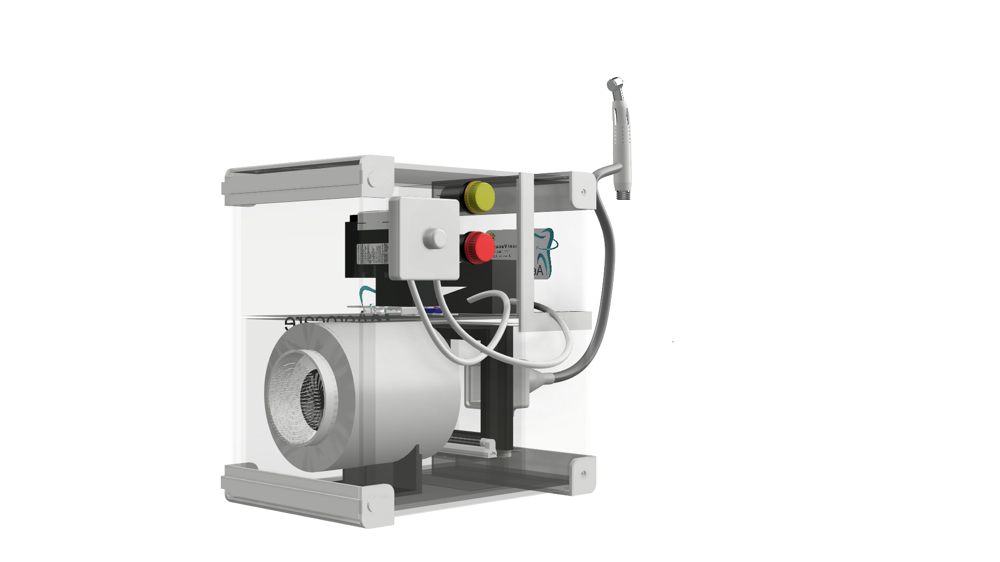
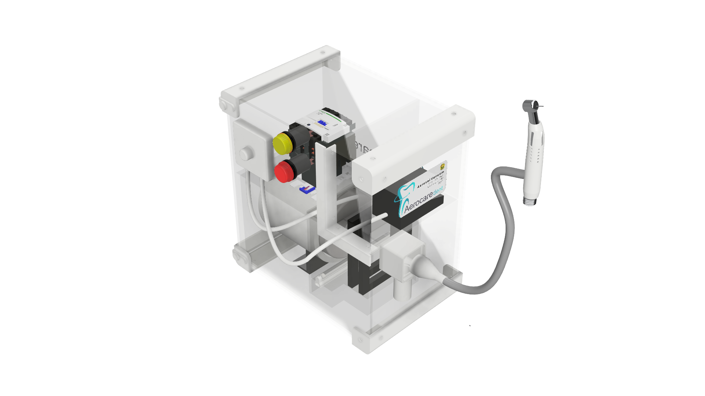
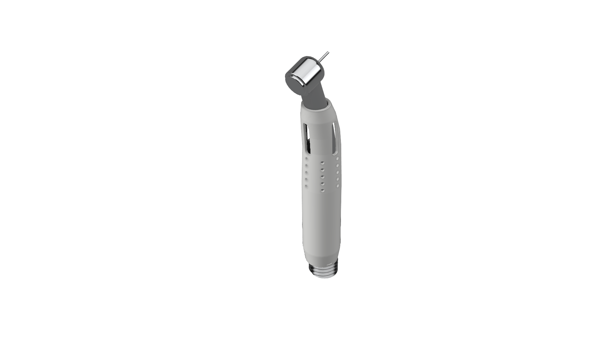
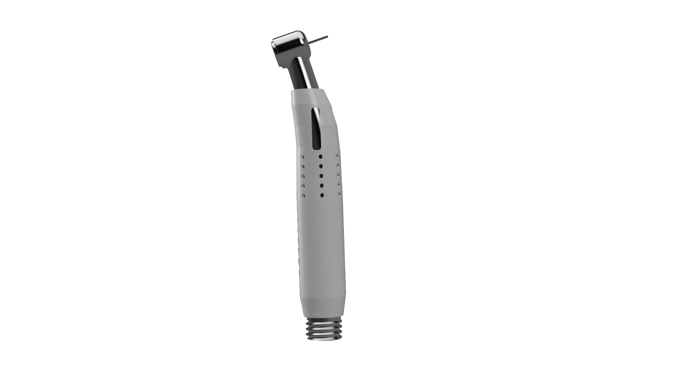
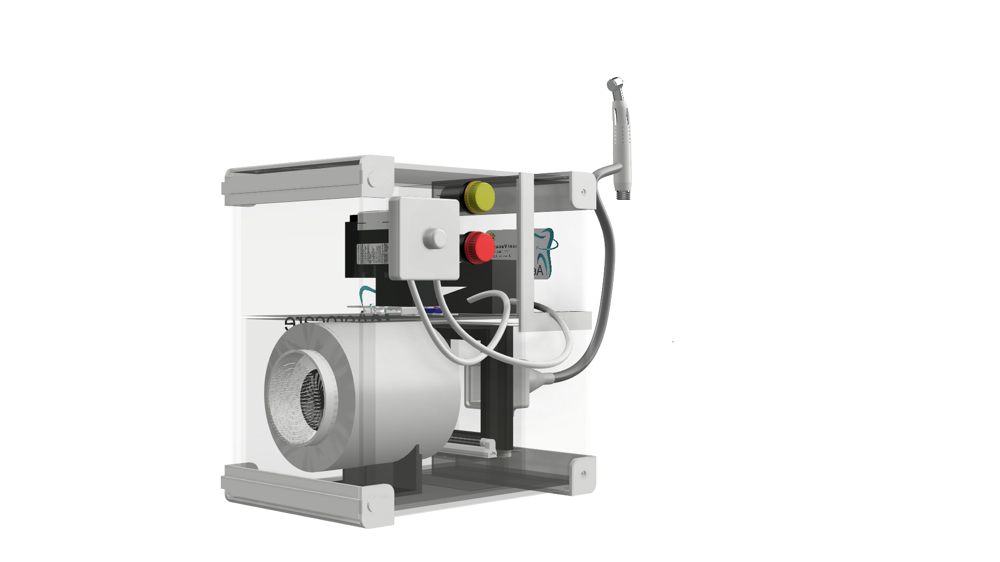
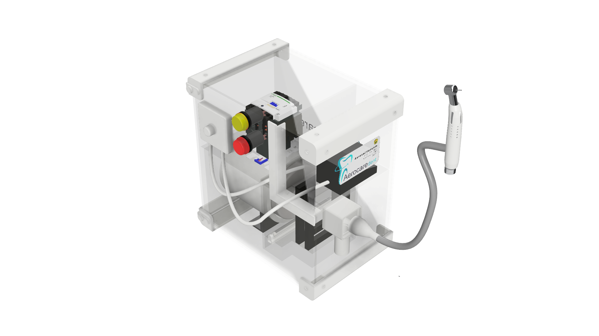
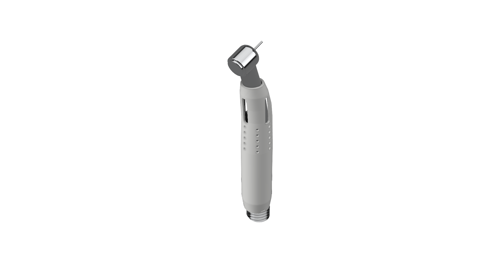
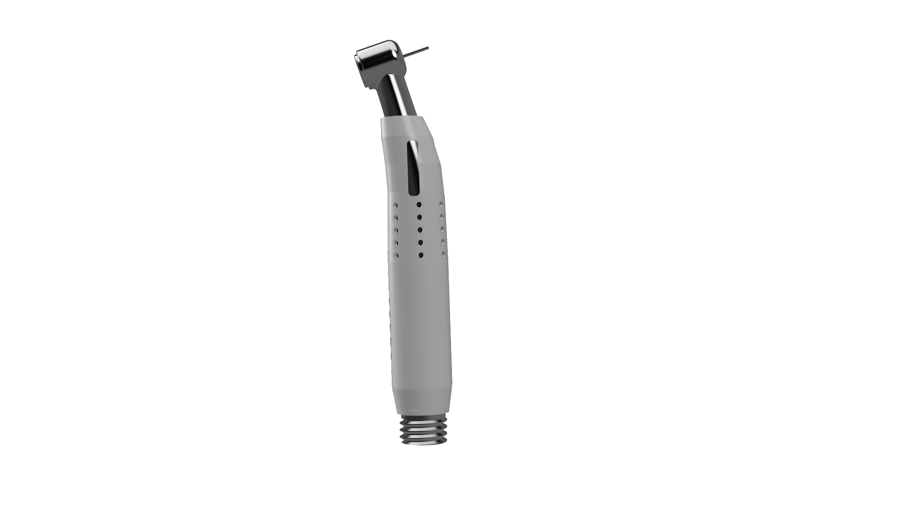

Currently focused on developing "Health Technology" and "Machine Learning-based Artificial Intelligence (AI)"
Contact usSkills
Create visual representations of technical components or systems in both 2D drawings and 3D models. This process includes designing shapes, defining dimensions, assembling parts, and generating technical drawings that serve as references for manufacturing and product development with Fusion 360, AutoCAD, CATIA.
Focused on analyzing structural behavior through numerical simulations. This includes evaluating stress, deformation, forces, and material response under various loading conditions. The results are used to assess the strength, safety, and efficiency of a design before it is manufactured.
Focused on utilizing algorithms to process data and build models capable of recognizing patterns. Its applications include data classification, prediction, clustering, and automating processes based on data-driven insights.
MY WORK


 







Background
Mechanical Engineering
2021 - 2025
Mechanical Engineering
2025 - Present
Get in Touch
If you want to collaborate or have any questions, feel free to reach out.
zulaikhanafirap@gmail.com
0878-5847-7225
Indonesia